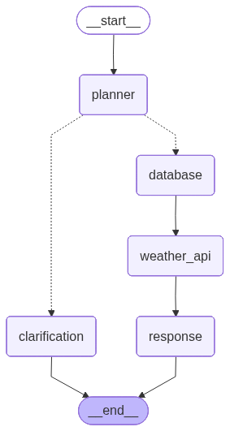
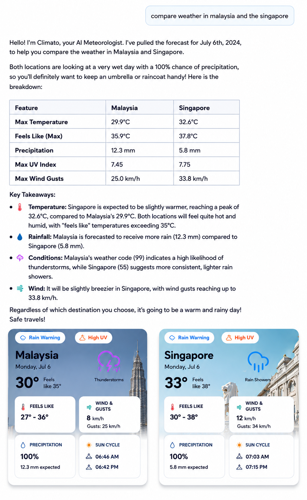

Chapter 6: Climato Backend Architecture¶
The Climato Weather AI Capstone. Tie it all together by building a complete, production-ready AI Weather Assistant application. Estimated Reading Time: 45 min
The Goal: Climato — A Smart Weather Assistant
We are building the backend for Climato — a weather application that lets users ask natural language questions about historical records and daily forecasts.
- Completely Free: No API keys required. We use the open-source Open-Meteo API with unlimited usage.
- FastAPI Part: Exposes REST endpoints that bridge the frontend and the AI.
- LangGraph Part: Powers a multi-step AI orchestration workflow (intent parsing → database cache check → external API call → natural language response generation).
Step 0: Project Folder Structure¶
Before we dive into the code, let's understand how the backend is organized. We use a scalable, multi-tier architecture typical for modern web services.
Project Folder Structure
backend/
├── main.py # Application entry point
├── core/
│ └── database.py # MongoDB connection setup
├── models/
│ └── db_models.py # Database schemas
├── schemas/
│ └── dtos.py # Data Transfer Objects (Pydantic validation)
├── repositories/
│ └── weather_repo.py # MongoDB queries (cache, history)
├── controllers/
│ └── chat_controller.py # FastAPI router endpoints
├── tools/
│ └── weather_tool.py # Open-Meteo API integrations
└── graph/
├── graph.py # LangGraph workflow definition
└── nodes.py # LangGraph AI nodes
Component Responsibilities¶
| Component | Responsibility |
|---|---|
| FastAPI | Receives HTTP requests |
| LangGraph | Controls workflow |
| Planner Node | Extracts weather intent |
| Database Node | Checks cached weather |
| Weather Tool | Calls Open-Meteo |
| Repository | Performs MongoDB queries |
| Response Node | Generates natural language answers |
Step 1: Planning the Flow¶
When a user asks a question like "What's the weather in Bangalore?", the request follows a strict path. We don't just blindly query an LLM; we parse the intent, check our local database cache, fetch missing data from Open-Meteo, and finally generate a response.

sequenceDiagram
participant User
participant FastAPI
participant Graph (Planner)
participant MongoDB
participant OpenMeteo API
participant Graph (Response)
User->>FastAPI: POST /chat "Weather in Bangalore?"
FastAPI->>MongoDB: Fetch recent history
FastAPI->>Graph (Planner): invoke()
Graph (Planner)->>Graph (Planner): Extract Intent (LLM)
Graph (Planner)->>MongoDB: Check cache for Bangalore
alt Cache Miss
MongoDB-->>Graph (Planner): No data found
Graph (Planner)->>OpenMeteo API: Fetch weather data
OpenMeteo API-->>Graph (Planner): Weather JSON
Graph (Planner)->>MongoDB: Save to cache (TTL = end of day)
else Cache Hit
MongoDB-->>Graph (Planner): Cached Weather JSON
end
Graph (Planner)->>Graph (Response): Pass aggregated data
Graph (Response)->>Graph (Response): Generate friendly answer (LLM)
Graph (Response)-->>FastAPI: Return state
FastAPI->>MongoDB: Save conversation history (TTL = 10 mins)
FastAPI-->>User: 200 OK (Response JSON + UI Widget Data)Step 2: Foundation (Schemas & Controllers)¶
First, we define our DTOs (Data Transfer Objects) using Pydantic in schemas/dtos.py. These ensure every request entering the API is strictly validated.
schemas/dtos.py
from pydantic import BaseModel
from typing import Optional, List, Literal
class WeatherTask(BaseModel):
type: Literal["forecast", "historical"]
city: str
start_date: str
end_date: str
class ChatRequest(BaseModel):
message: str
session_id: str
class ChatResponse(BaseModel):
answer: str
data: Optional[List[dict]] = None
Next, we expose the REST endpoint in controllers/chat_controller.py. This receives the request, triggers the LangGraph agent, and returns the AI's final answer.
controllers/chat_controller.py
from fastapi import APIRouter
from schemas.dtos import ChatRequest, ChatResponse
from graph.graph import app as graph_app
from repositories.weather_repo import insert_conversation, get_recent_conversations
from datetime import datetime, timezone
router = APIRouter()
@router.post("/chat", response_model=ChatResponse)
async def chat_endpoint(request: ChatRequest):
# 1. Fetch recent history for this session
history = await get_recent_conversations(request.session_id)
# 2. Run LangGraph workflow
result = await graph_app.ainvoke({
"question": request.message,
"history": history,
"session_id": request.session_id
})
answer = result.get("final_answer", "I'm sorry, I couldn't process your request.")
# 3. Save conversation with UTC datetime for MongoDB TTL index
await insert_conversation({
"session_id": request.session_id,
"question": request.message,
"answer": answer,
"timestamp": datetime.now(timezone.utc)
})
return ChatResponse(answer=answer, data=result.get("db_results"))
Why LangGraph?¶
You might wonder why we don't simply ask the LLM to answer the weather question directly.
The reason is that the LLM should not: - Query databases. - Build API URLs. - Decide cache policies. - Fetch external weather data.
Instead, LangGraph separates AI reasoning from deterministic execution. The LLM only understands the user's intent, while Python code performs database lookups, API requests, and caching.
This separation makes the application more reliable, faster, and easier to maintain.
Step 3: Graph Construction (Nodes & State)¶
We use LangGraph to orchestrate our AI agent.
The Graph State¶
The state is the shared memory dictionary passed between all nodes during a single execution.
flowchart TD
Start((START)) -->|question, history| Planner[Planner]
Planner -->|weather_tasks| DB[Database]
DB -->|db_results, missing_tasks| API[Weather API]
API -->|db_results| Resp[Response]
Resp -->|final_answer| End((END))graph/state.py
The Nodes¶
Each node performs a specific task. We compile these nodes together in graph/graph.py.
1. Planner Node
Parses the user's messy natural language query into a clean, structured list of WeatherTask requirements using an LLM tool call.
Planner Node Code
async def planner_node(state: GraphState):
messages = [
SystemMessage(content="You are a weather routing assistant..."),
HumanMessage(content=state["question"])
]
response = llm_with_tools.invoke(messages)
tasks = []
if response.tool_calls:
for tool_call in response.tool_calls:
tasks.append(WeatherTask(**tool_call["args"]))
needs_clarification = len(tasks) == 0
return {"weather_tasks": tasks, "needs_clarification": needs_clarification}
2. Clarification Node
If the Planner Node finds the query too ambiguous (e.g., just saying "weather"), this node safely halts execution and asks the user for missing details.
Clarification Node Code
3. Database Node (Theory)
This node is responsible for checking our local MongoDB cache to see if we already fetched the requested weather data today.
- It fetches the planned tasks from the database.
- If results are zero (cache miss), it marks the tasks as missing_tasks to be fetched from the external API.
- Otherwise, it waits for parallel tasks to finish and passes the aggregated results down the line. (We will write the actual code for this in Step 4).
Step 4: Repositories & Database Node Implementation¶
Now we write our database logic in repositories/weather_repo.py to check for cached weather.
flowchart TD
A[User] --> B[Database]
B --> C{Cache Hit?}
C -->|Yes| D[Return]
C -->|No| E[Open-Meteo]
E --> F[Save to MongoDB]
F --> G[Return]repositories/weather_repo.py
async def get_daily_weather(location_id: str, start_date: str, end_date: str) -> list[dict]:
"""
Returns all non-stale weather_daily docs for this location_id in the given date range.
"""
dates = _date_range(start_date, end_date)
now_iso = _now_iso()
cursor = weather_daily_col.find({
"location_id": location_id,
"date": {"$in": dates},
"expires_at": {"$gt": now_iso},
})
docs = await cursor.to_list(length=500)
for doc in docs:
doc["_id"] = str(doc["_id"])
return docs
Now we can implement the Database Node properly. It acts as the traffic controller: fetching from the repo, and only requesting new API calls if the data is completely missing!
Database Node Code
async def database_node(state: GraphState):
tasks = state.get("weather_tasks", [])
db_results = []
missing_tasks = []
for t in tasks:
# Hit the repository logic
hits = await get_daily_weather(loc_id, t["start_date"], t["end_date"])
if not hits:
missing_tasks.append(t)
else:
db_results.extend(hits)
return {"db_results": db_results, "missing_tasks": missing_tasks}
Step 5: Weather Tools¶
We need a dedicated tool to fetch real-world data without using any paid APIs. In tools/weather_tool.py, we build a wrapper around the Open-Meteo API.
Why Open-Meteo?
We use Open-Meteo because it is:
- Completely free.
- Requires no API keys.
- Supports forecast and historical weather.
- Includes geocoding.
- Well suited for educational and open-source projects.
To ensure high performance, we use batch requests (asyncio.gather). This allows us to fetch data for multiple cities and dates simultaneously, rather than waiting for each API call to finish one by one.
tools/weather_tool.py
import httpx
import asyncio
async def fetch_weather_batch(tasks: list, client: httpx.AsyncClient) -> list[dict]:
"""One geocoding lookup per unique city, one API call per city+range group."""
# 1. Geocoding pass: check local DB, fall back to API
unique_cities = {t.city for t in tasks}
location_map = {}
for req_city in unique_cities:
loc = await get_location(req_city)
location_map[req_city.lower()] = loc
# 2. Build requests
reqs = []
for task in tasks:
loc = location_map[task.city.lower()]
reqs.append(build_weather_request(task, loc))
# 3. Fire all requests simultaneously using asyncio.gather
results = []
coros = [fetch_open_meteo(r, location_map[r.city.lower()]["id"], client) for r in reqs]
api_results = await asyncio.gather(*coros)
for res in api_results:
results.extend(res)
return results
Step 6: Conversation History Management¶
To make the AI feel like a real conversation, it needs to remember what you just said.
We use MongoDB TTL (Time-To-Live) Indexes. Every time a message is saved, MongoDB automatically deletes it after 10 minutes (expireAfterSeconds=600). In the chat_controller.py, we fetch these temporary messages using the user's session_id and pass them into the LangGraph state.
History Injection
Step 7: LLM Response¶
Finally, the Response Node takes all the aggregated db_results and the history, and feeds it into the LLM to generate a markdown-formatted, friendly response for the user.
Response Node Code
async def response_node(state: GraphState):
db_results = state.get("db_results", [])
prompt = f"""You are Climato, a friendly weather AI.
Provide a friendly markdown response based on this data: {db_results}
"""
response = llm.invoke([
SystemMessage(content=prompt),
HumanMessage(content=state["question"])
])
return {"final_answer": response.content}
Step 8: Watch It Run (The Logs)¶
If we start our backend server and ask a complex multi-part question like "differences in weather of sydney today and weather on 1999 dec 31", we can watch LangGraph work its magic right in the terminal console. Notice how it seamlessly splits the query into multiple tasks and navigates through the nodes:
Reached Planner Node
planner has planned these tasks to solve the query : "differences in weather of sydney today and weather on 1999 dec 31"
task 1:
{
"type": "forecast",
"city": "Sydney",
"start_date": "2026-07-06",
"end_date": "2026-07-06"
}
task 2:
{
"type": "historical",
"city": "Sydney",
"start_date": "1999-12-31",
"end_date": "1999-12-31"
}
task 1 reached DatabaseNode
found results - 0 make a weather tool call
task 2 reached DatabaseNode
found results - 0 make a weather tool call
task 1 Reached weather tool
task 2 Reached weather tool
--- [Response Node] --- Final Answer generated successfully.
If we immediately ask the same question again, watch what happens to the Database Node—it hits the cache and completely skips the Weather API Node!
Reached Planner Node
planner has planned these tasks to solve the query : "differences in weather of sydney today and weather on 1999 dec 31"
task 1:
{
"type": "forecast",
"city": "Sydney",
"start_date": "2026-07-06",
"end_date": "2026-07-06"
}
task 2:
{
"type": "historical",
"city": "Sydney",
"start_date": "1999-12-31",
"end_date": "1999-12-31"
}
task 1 reached DatabaseNode
found results - 1
task 2 reached DatabaseNode
found results - 1
--- [Response Node] --- Final Answer generated successfully.
The Final Visuals¶
When integrated with the frontend, the UI receives both the markdown string (for the chat bubble) and the raw JSON data (to render beautiful horizontal weather widgets!).

Source Code¶
The full, working code for this project is available on GitHub!